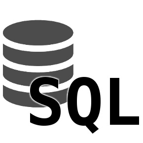
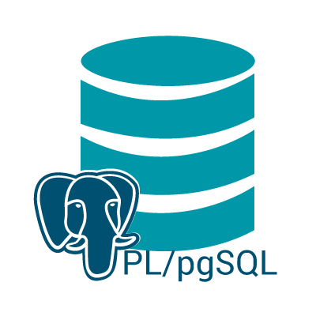
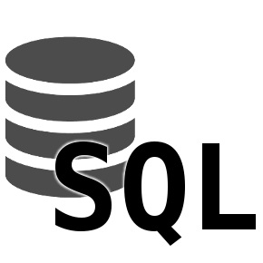
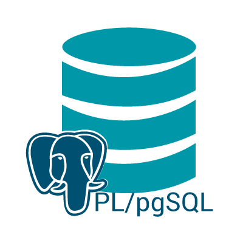
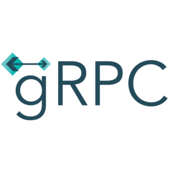
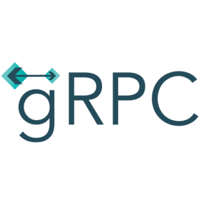

Having begun my career in finance as an accountant-turned-analyst, I've developed a love for software engineering where business acumen meets disciplined craftsmanship. I'm passionate about the intuition of software design, building understandable systems, and passing on what I've learned to the "next generation" of developers. Above all else, though, my mission is to build trust with users by creating services that reflect the concerns of the business, and revitalizing the legacy applications upon which they depend.
I'm fairly agnostic to the tools of the trade, but generally prefer a deeper understanding of fewer, older languages/frameworks over a shallower knowledge of many "modern" ones. I land somewhere between the Object-Oriented and Functional crowds, preferring the gitterdone pragmatism of the former, and the latter's eye for purity and side-effects. I've also grown to appreciate how well these preferences live into the spirit of domain-driven-design and hexagonal architecture (what's a bio without buzzwords?).
Below is a (probably) non-exhaustive collection of the technologies I would consider to be my favorites - the ones I reach for by default, and the ones I know best

 



 


I've also included some honorable mentions below - tools in which I have experience ranging from "had to kick it around for a job" to "know enough to be dangerous"


One of my goals as a developer is to parrot overcooked cliches like "the simplest thing possible". All jokes aside, I'm intentional about allowing discomfort to describe a problem, and the problem to prescribe a solution. As such, this site is tailored to my needs at the moment. If it looks overly simplistic, it's because my needs for the site are simplistic. It's also just fun! There's a lot of freedom that comes from eschewing frameworks (and even simple site generators) and I love the ability to craft it into whatever I want. Currently, everything is hand-rolled and served with GitHub Pages, but that (of course) is subject to change as the site evolves.